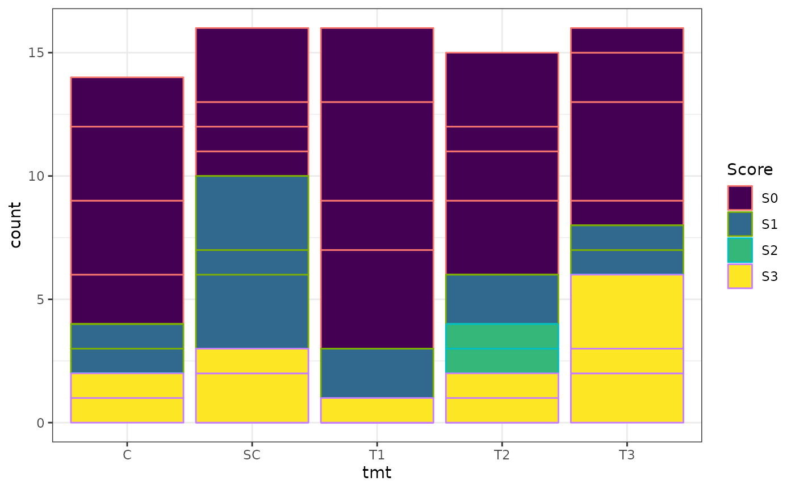
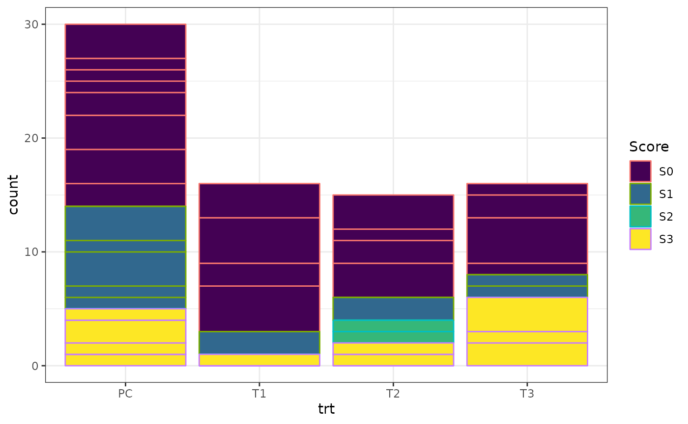
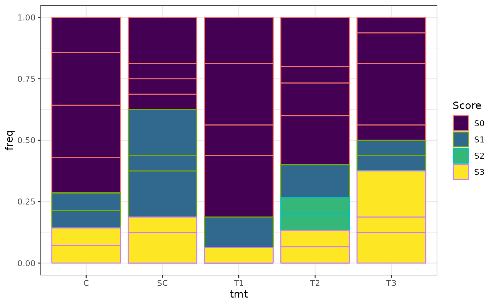
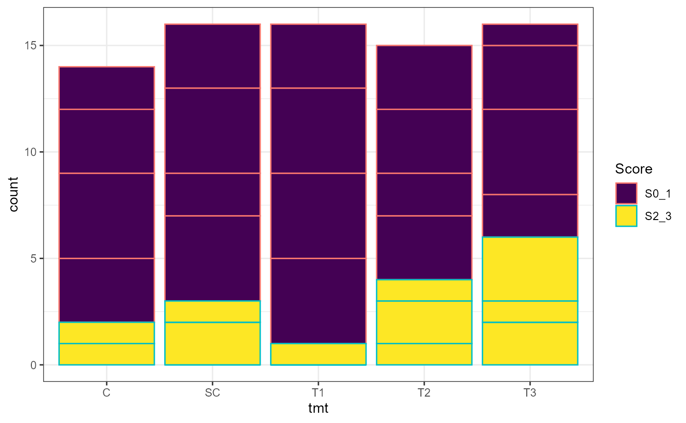
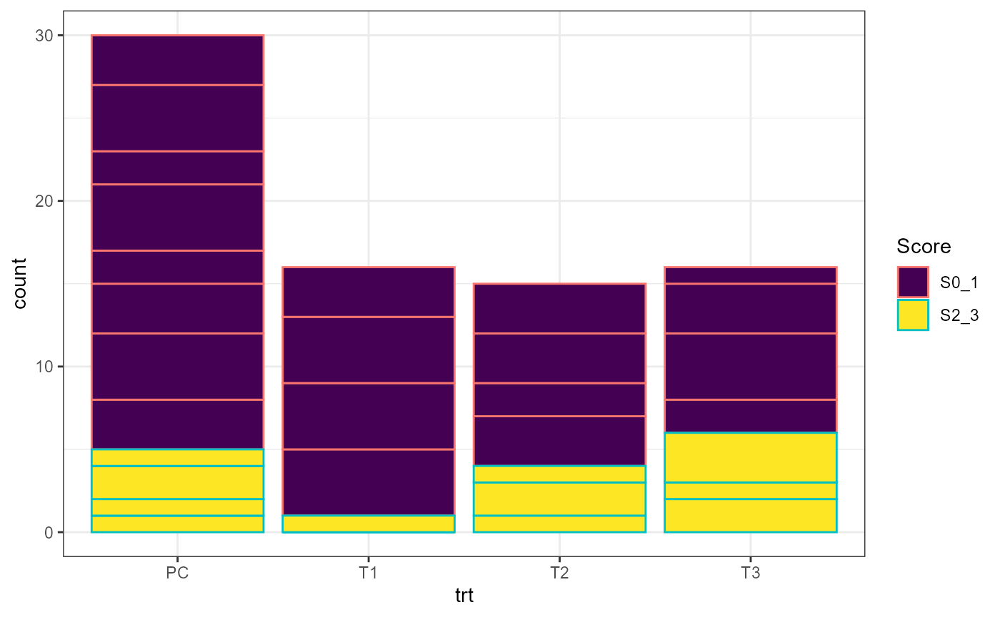
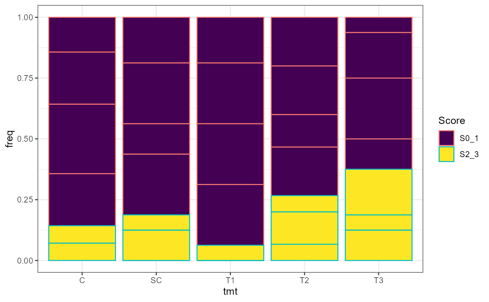
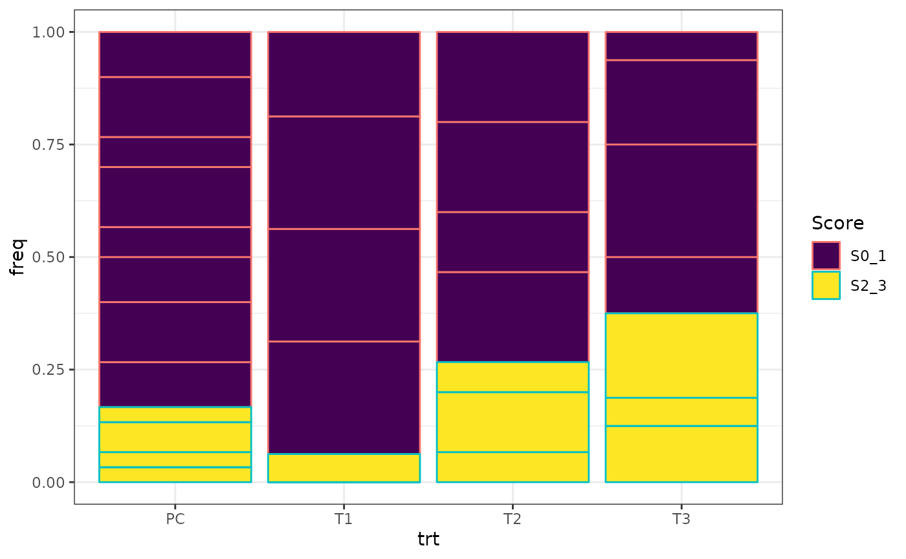

PTZ
Zhenglei Gao
2023-04-11
Example_RSCABS_PTZ.RmdBackground
Allen Olmstead Ecotoxicologist
For the public consultation period on the EU prothioconazole endocrine assessment, one of the studies of focus in the FSTRA (fish short term reproduction assay). In particular there was a question concerning the histopathology results (female oocyte atresia, specifically) and whether they were statistically significant. In our report, there is no formal statistical analysis of the data. I was asked about the availability of approaches for this based on my past postdoctoral experience at the EPA lab that developed many of the endocrine assays. For histopath endpoints, the EPA used a Rao-Scott Cochran-Armitage Trend Test By Slices (RSCABS, described in attached paper).
Using this RSCABS procedure, I looked at the female oocyte atresia data in R. The attached Excel file has the data and the other attached pdf has my notes on this analysis. However, validation is needed if we are to proceed with this approach in any external purpose.
RSCABS
RSCABS: designed to analyze histopathological results from standard toxicology experiments, for example the MEOGRT.
Steps in the testing procedure:
1.The Cochran-Armitage (CA) trend test was used to test a set of organisms for an increase in the presences (score > 0) or absence (score = 0) of an effect with an increase in the dose concentration of the treatments. 2. The Rao-Scott (RS) adjustment controls for the similarity in each experiment unit / apparatus (e.g., fish tank) by calculating an adjustment to the CA test statistic from correlation of organisms within each apparatuses. 3. The by slices (BS) part allows for testing at each severity score (e.g., from 1 to 5) instead of just presences or absence. By slices works by splitting the severity scores associated with an endpoint into two groups based on the severity score being tested. The RSCA test statistic is calculated based on these two groups. 4. Carry out a step-down procedure by excluding the highest treatment level in the analysis and recalculate the RSCA test statistic until the test stats is not significant or there is only control group left.
EDA
dat_ptz## # A tibble: 20 × 9
## tmt tank S0 S1 S3 S2 S0_1 S0_2 total
## <chr> <chr> <int> <dbl> <dbl> <dbl> <dbl> <dbl> <dbl>
## 1 C 5A 2 1 1 0 3 3 4
## 2 C 5B 3 1 0 0 4 4 4
## 3 C 5C 3 0 0 0 3 3 3
## 4 C 5D 2 0 1 0 2 2 3
## 5 SC 4A 1 3 0 0 4 4 4
## 6 SC 4B 1 1 2 0 2 2 4
## 7 SC 4C 1 3 0 0 4 4 4
## 8 SC 4D 3 0 1 0 3 3 4
## 9 T1 3A 4 0 0 0 4 4 4
## 10 T1 3B 2 2 0 0 4 4 4
## 11 T1 3C 4 0 0 0 4 4 4
## 12 T1 3D 3 0 1 0 3 3 4
## 13 T2 2A 3 0 0 1 3 4 4
## 14 T2 2B 2 0 1 1 2 3 4
## 15 T2 2C 1 2 0 0 3 3 3
## 16 T2 2D 3 0 1 0 3 3 4
## 17 T3 1A 1 1 2 0 2 2 4
## 18 T3 1B 4 0 0 0 4 4 4
## 19 T3 1C 2 1 1 0 3 3 4
## 20 T3 1D 1 0 3 0 1 1 4
ptz <- dat_ptz%>%dplyr::select(c(tmt,tank,S0,S1,S2,S3))%>%pivot_longer(cols=c(S0,S1,S2,S2,S3),names_to = "Score",values_to = "count")
theme_set(theme_bw())
ggplot(ptz,aes(x=tmt,y=count,color=Score,fill=Score))+geom_bar(stat = "identity",position = "stack")+scale_fill_viridis_d()
ptz <- ptz%>%mutate(trt=tmt)
ptz$trt[ptz$trt=="SC" | ptz$trt=="C"] <- "PC"
ggplot(ptz,aes(x=trt,y=count,color=Score,fill=Score))+geom_bar(stat = "identity",position = "stack")+scale_fill_viridis_d()
ggplot(ptz%>%group_by(tmt)%>%mutate(total=sum(count),freq=count/total),aes(x=tmt,y=freq,color=Score,fill=Score))+geom_bar(stat = "identity",position = "stack")+scale_fill_viridis_d()
ggplot(ptz%>%group_by(trt)%>%mutate(total=sum(count),freq=count/total),aes(x=trt,y=freq,color=Score,fill=Score))+geom_bar(stat = "identity",position = "stack")+scale_fill_viridis_d()
slice2 <- dat_ptz%>%mutate(S2_3=total-S0_1)%>% dplyr::select(c(tmt,tank,S0_1,S2_3))%>%pivot_longer(cols=c(S0_1,S2_3),names_to = "Score",values_to = "count")
slice2 <- slice2%>%mutate(trt=tmt)
slice2$trt[slice2$trt=="SC" | slice2$trt=="C"] <- "PC"
ggplot(slice2,aes(x=tmt,y=count,color=Score,fill=Score))+geom_bar(stat = "identity",position = "stack")+scale_fill_viridis_d()
ggplot(slice2,aes(x=trt,y=count,color=Score,fill=Score))+geom_bar(stat = "identity",position = "stack")+scale_fill_viridis_d()
ggplot(slice2%>%group_by(tmt)%>%mutate(total=sum(count),freq=count/total),aes(x=tmt,y=freq,color=Score,fill=Score))+geom_bar(stat = "identity",position = "stack")+scale_fill_viridis_d()
ggplot(slice2%>%group_by(trt)%>%mutate(total=sum(count),freq=count/total),aes(x=trt,y=freq,color=Score,fill=Score))+geom_bar(stat = "identity",position = "stack")+scale_fill_viridis_d()
R script
# fucntion to generate the Rao Scott adjusted values
get_RS_adj_val <- function(group, replicate, affected, total) {
# create data frame from input vectors
dat <- tibble(grp = group, rep = replicate, aff = affected, tot = total)
# create aggregates by dose levels
agg <- group_by(dat, grp) %>%
summarize(x = sum(aff), n = sum(tot), m = n()) %>%
mutate(p_hat = x/n,
b = p_hat*(1 - p_hat)/n)
# add aggregates to original data frame
dat <- left_join(dat, agg, by = "grp") %>%
mutate(r2 = (aff - tot*p_hat)^2) # square of residuals
# calculate subgroup variances
subgrp_var <- group_by(dat, grp, m, n) %>%
summarize(sum_r2 = sum(r2), .groups = "drop") %>%
mutate(v = m*sum_r2/n^2/(m - 1))
agg$v <- subgrp_var$v
# calculate adjusted n and x values
mutate(agg, D = ifelse(v/b < 1, 1, v/b),
n_tilde = n/D,
x_tilde = x/D)
}
# function to run the Cochran-Armitage test with adjusted x and n values.
get_CA_Z <- function(adj_x, adj_n) {
d <- 1:length(adj_x)
N <- sum(adj_n)
d_bar <- sum(d*adj_n)/N
p_bar <- sum(adj_x)/N
num <- sum(adj_x*d) - N*p_bar*d_bar
den <- p_bar*(1 - p_bar)*(sum(adj_n*(d)^2) - N*d_bar^2)
num/sqrt(den)
}
# wrapper function for running RSCA test
run_RSCA <- function(group, replicate, affected, total) {
interm_values <- get_RS_adj_val(group, replicate, affected, total)
Z <- get_CA_Z(interm_values$x_tilde, interm_values$n_tilde)
list(interm_values = interm_values, Z = Z)
}| tmt | tank | S0 | S1 | S2 | S3 |
|---|---|---|---|---|---|
| C | 5A | 2 | 1 | 0 | 1 |
| C | 5B | 3 | 1 | 0 | 0 |
| C | 5C | 3 | 0 | 0 | 0 |
| C | 5D | 2 | 0 | 0 | 1 |
| SC | 4A | 1 | 3 | 0 | 0 |
| SC | 4B | 1 | 1 | 0 | 2 |
| SC | 4C | 1 | 3 | 0 | 0 |
| SC | 4D | 3 | 0 | 0 | 1 |
| T1 | 3A | 4 | 0 | 0 | 0 |
| T1 | 3B | 2 | 2 | 0 | 0 |
| T1 | 3C | 4 | 0 | 0 | 0 |
| T1 | 3D | 3 | 0 | 0 | 1 |
| T2 | 2A | 3 | 0 | 1 | 0 |
| T2 | 2B | 2 | 0 | 1 | 1 |
| T2 | 2C | 1 | 2 | 0 | 0 |
| T2 | 2D | 3 | 0 | 0 | 1 |
| T3 | 1A | 1 | 1 | 0 | 2 |
| T3 | 1B | 4 | 0 | 0 | 0 |
| T3 | 1C | 2 | 1 | 0 | 1 |
| T3 | 1D | 1 | 0 | 0 | 3 |
# create control only data set
cdat <- filter(dat_ptz, tmt %in% c("C", "SC"))
# Slice S1
ctrl_s1_p <- run_RSCA(cdat$tmt, cdat$tank, cdat$S0, cdat$total)$Z %>%
abs() %>%
pnorm() %>%
`-`(1, .) %>%
`*`(2) %>%
round(3)
# slice S2
ctrl_s2_p <- run_RSCA(cdat$tmt, cdat$tank, cdat$S0_1, cdat$total)$Z %>%
abs() %>%
pnorm() %>%
`-`(1, .) %>%
`*`(2) %>%
round(3)
# slice S3
ctrl_s3_p <- run_RSCA(cdat$tmt, cdat$tank, cdat$S0_2, cdat$total)$Z %>%
abs() %>%
pnorm() %>%
`-`(1, .) %>%
`*`(2) %>%
round(3)
# combine control treatments
dat <- mutate(dat_ptz, tmt = ifelse(tmt == "SC", "C", tmt))
# summary data frame
dat_sum <- group_by(dat, tmt) %>%
summarize(across(S0:total, ~ sum(.)))
# Slice S1
s1_p <- run_RSCA(dat$tmt, dat$tank, dat$total-dat$S0, dat$total)$Z %>%
pnorm() %>%
round(3)
dat1<- dat_ptz%>%filter(tmt!="SC")
dat2 <- dat_ptz%>%filter(tmt!="C")
s1c_p <- run_RSCA(dat1$tmt, dat1$tank, dat1$S0, dat1$total)$Z %>%
pnorm() %>%
round(3)
s1c_p## [1] 0.11## [1] 0.74
# table for slice 1
mutate(dat_sum, `S1-S3` = total - S0,
Percent = round(`S1-S3`/total*100, 0)) %>%
dplyr::select(tmt, S0, `S1-S3`, Percent) %>%
kable()| tmt | S0 | S1-S3 | Percent |
|---|---|---|---|
| C | 16 | 14 | 47 |
| T1 | 13 | 3 | 19 |
| T2 | 9 | 6 | 40 |
| T3 | 8 | 8 | 50 |
# slice S2
s2_p <- run_RSCA(dat$tmt, dat$tank, dat$S0_1, dat$total)$Z %>%
pnorm() %>%
round(3)
run_RSCA(dat1$tmt, dat1$tank, dat1$S0_1, dat1$total)$Z %>% pnorm() ## [1] 0.04713206## [1] 0.07900702
# table for slice 2
mutate(dat_sum, `S0-S1` = S0 + S1, `S2-S3` = S2 + S3,
Percent = round(`S2-S3`/total*100, 0)) %>%
select(tmt, `S0-S1`, `S2-S3`, Percent) %>%
kable()| tmt | S0-S1 | S2-S3 | Percent |
|---|---|---|---|
| C | 25 | 5 | 17 |
| T1 | 15 | 1 | 6 |
| T2 | 11 | 4 | 27 |
| T3 | 10 | 6 | 38 |
# slice S3
s3_p <- run_RSCA(dat$tmt, dat$tank, dat$S0_2, dat$total)$Z %>%
pnorm() %>%
round(3)
run_RSCA(dat1$tmt, dat1$tank, dat1$S0_2, dat1$total)$Z %>% pnorm() ## [1] 0.08706086## [1] 0.1304879
# table for slice 3
mutate(dat_sum, `S0-S2` = S0 + S1 + S2,
Percent = round(S3/total*100, 0)) %>%
select(tmt, `S0-S2`, S3, Percent) %>%
kable()| tmt | S0-S2 | S3 | Percent |
|---|---|---|---|
| C | 25 | 5 | 17 |
| T1 | 15 | 1 | 6 |
| T2 | 13 | 2 | 13 |
| T3 | 10 | 6 | 38 |
s1_p## [1] 0.484
s2_p## [1] 0.072
s3_p## [1] 0.161Check with runRSCABS
Data: A standard data set in the tall format. Every row indicates an organism. The data set must contain columns for the treatment level and every tested histological endpoint.
Treatment: The name of the column that contains the information about the treatment level. Increasing values indicate higher treatments.
Replicate: The name of the column that contains the information about the replicate structure. If the replicate is not specified this will default to running “CA” as the test type.
Effects: The endpoint to be tested. Defaults to all columns that have integers less then 20. The analysis assumes that higher scores indicate a worse outcome.
test.type: Indicate the type of analysis to be performed. Use “RS” to select the Rao-Scott adjustment to the Cochran-Armitage test and “CA” to ignore the adjustment.
genIndividual <- function(Score,count){
if(count>0){
return(data.frame(Score1=rep(gsub("S","",Score),count)))
}else return(NULL)
}
ptz1 <- ptz %>% mutate(individual=map2(Score,count,genIndividual)) %>% unnest(c(individual))
ptz1 <- as.data.frame(ptz1)
ptz2 <- ptz1[,c("trt","tank","Score1")]
ptz2$trt <- factor(ptz2$trt)
ptz2$Score1 <- as.numeric(ptz2$Score1)
ptz2$S2 <- ptz2$Score1+5
runRSCABS(ptz2,'trt','tank',test.type='RS')## Effect Treatment R.Score Statistic P.Value Signif
## 1 Score11 4 1 -0.03982353 0.48411691 .
## 2 Score11 4 1 -0.03982353 0.48411691 .
## 3 Score12 4 2 1.45886196 0.07230155 .
## 4 Score12 4 2 1.45886196 0.07230155 .
## 5 Score13 4 3 0.99006850 0.16107032 .
## 6 Score13 4 3 0.99006850 0.16107032 .
## 7 S26 4 6 -0.03982353 0.48411691 .
## 8 S26 4 6 -0.03982353 0.48411691 .
## 9 S27 4 7 1.45886196 0.07230155 .
## 10 S27 4 7 1.45886196 0.07230155 .
## 11 S28 4 8 0.99006850 0.16107032 .
## 12 S28 4 8 0.99006850 0.16107032 .Alternative Approach
1. A nonparametric approach based on relative effect size
library(nparcomp)
res1<-nparcomp(Score1 ~ trt, data=ptz2, asy.method = "mult.t",
type = "Dunnett", info = FALSE,plot.simci = TRUE)
summary(res1) # Reveal the adjusted p-values
res1<-nparcomp(Score1 ~ trt, data=ptz2, asy.method = "mult.t",
type = "Williams",alternative = "greater",info = FALSE)
summary(res1) # Reveal the adjusted p-values
plot.nparcomp.zg <- function (x, ...)
{
nc <- length(x$connames)
text.Ci <- paste(x$input$conf.level * 100, "%", "Simultaneous Confidence Intervals")
Lowerp <- "|"
plot(x$Analysis$Estimator, (1:nc)+1, xlim = c(0, 1), pch = 15,
axes = FALSE, xlab = "", ylab = "")
points(x$Analysis$Lower, (1:nc)+1, pch = Lowerp, font = 2, cex = 2)
points(x$Analysis$Upper, (1:nc)+1, pch = Lowerp, font = 2, cex = 2)
abline(v = 0.5, lty = 3, lwd = 2)
for (ss in (1:nc)+1) {
polygon(x = c(x$Analysis$Lower[ss], x$Analysis$Upper[ss]),
y = c(ss, ss), lwd = 2)
}
axis(1, at = seq(0, 1, 0.1))
axis(2, at = 1:(nc+1), labels = c("tmp",x$connames))
box()
title(main = c(text.Ci, paste("Type of Contrast:", x$input$type),
paste("Method:", x$AsyMethod)))
}
par(oma=c(5,7,2,2),mar = c(3,3,3,3) )
plot.nparcomp.zg(res1) # Plot simultaneous confidence limits4. Cumulative link model
library(ordinal)
ptz3 <- ptz2
ptz3$trt <- factor(ptz3$trt)
ptz3$Score1 <- factor(ptz2$Score1)
modCLM <- clm(Score1 ~ trt, data=ptz3)
propCI <-exp(confint(modCLM, level=1-0.05/2)) # Bonferroni odds ratio CIA new permutation test for analyzing histopathologic findings with severity based on their decomposition into multiple correlated proportions for multiple Dunnett or Williams-type contrasts is presented. The focus is on problem-adequate interpretation and use for small ni designs with possibly reduced variance in the control. An asymptotic variant for simple quasilinear models is also available, allowing a wide class of possible dose-response dependencies to be evaluated. Due to the use of the CRAN packages coin, tukeytrend and multcomp, the evaluation of real data is relatively easy. The next future work is simulation for small ni designs with different data conditions up to zero-variance in the control.
## Loading required package: survival## Loading required package: mvtnorm## Loading required package: TH.data##
## Attaching package: 'TH.data'## The following object is masked from 'package:MASS':
##
## geyser
Co1 <- function(data) trafo(data, factor_trafo = function(x)
model.matrix(~x - 1) %*% t(contrMat(table(x), "Dunnett")))
ptz2 <- ptz2%>% mutate(EP1=ifelse(Score1>0,1,0),EP2=ifelse(Score1>1,1,0),EP3=ifelse(Score1>2,1,0))
Codu <-independence_test(EP1 +EP2+EP3~ trt, data = ptz2, teststat = "maximum",
distribution = "approximate", xtrafo=Co1, alternative="greater")
Codu <-independence_test(EP1 +EP2+EP3~ trt, data = ptz2, teststat = "maximum",
distribution = "approximate", xtrafo=Co1, alternative="less")
pvalCODU <-pvalue(Codu, method="single-step")
pvalCODU## EP1 EP2 EP3
## T1 - PC 0.2116 0.7569 0.6812
## T2 - PC 0.6440 0.9817 0.8595
## T3 - PC 0.8492 0.9986 0.9979
CoW <- function(data) trafo(data, factor_trafo = function(x)
model.matrix(~x - 1) %*% t(contrMat(table(x), "Williams")))
Cowi <-independence_test(EP1 +EP2+EP3~ trt, data = ptz2, teststat = "maximum",
distribution = "approximate", xtrafo=CoW, alternative="greater")
pvalCOWI <-pvalue(Cowi, method="single-step")
pvalCOWI## EP1 EP2 EP3
## C 1 0.8069 0.2185 0.2484
## C 2 0.8631 0.2731 0.4650
## C 3 0.9581 0.5024 0.6493
data(exampleHistData)
subIndex<-which(exampleHistData$Generation=="F1" &
exampleHistData$Genotypic_Sex=="Male" &
exampleHistData$Age=="8_wk")
LH<-exampleHistData[subIndex, ]
lh<-LH[, c(2,6)]
lh$Gon<-as.numeric(lh$Gon_Phenotype)
lh$EP1<-ifelse(lh$Gon >1,1,0)
lh$EP2<-ifelse(lh$Gon >2,1,0)
lh$EP3<-ifelse(lh$Gon >3,1,0)
lh$treat<-as.factor(lh$Treatment)
lhh<-droplevels(lh[lh$treat!=6, ])
Lhh<-droplevels(lhh[lhh$treat!=3, ])
library("coin")
library("multcomp")
Co1 <- function(data) trafo(data, factor_trafo = function(x)
model.matrix(~x - 1) %*% t(contrMat(table(x), "Dunnett")))
Codu <-independence_test(EP1 +EP2+EP3~ treat, data = Lhh, teststat = "maximum",
distribution = "approximate", xtrafo=Co1, alternative="greater")
pvalCODU <-pvalue(Codu, method="single-step")
pvalCODU
CoW <- function(data) trafo(data, factor_trafo = function(x)
model.matrix(~x - 1) %*% t(contrMat(table(x), "Williams")))
Cowi <-independence_test(EP1 +EP2+EP3~ treat, data = Lhh, teststat = "maximum",
distribution = "approximate", xtrafo=CoW, alternative="greater")
pvalCOWI <-pvalue(Cowi, method="single-step")
pvalCOWIMonotone increasing trends exist for any category, whereas the strongest for 1, (2,3,5).
Adu <-independence_test(Gon+EP1 +EP2+EP3~ treat, data = Lhh, teststat = "maximum",
distribution = "approximate", xtrafo=Co1, alternative="greater")
pvalADU <-pvalue(Adu, method="single-step")
pvalADU
library("coin")
library("multcomp")
green$treat<-as.factor(green$Dose)
Co1 <- function(data) trafo(data, factor_trafo = function(x)
model.matrix(~x - 1) %*% t(contrMat(table(x), "Dunnett")))
gCodu <-independence_test(S12 +S23~ treat, data = green, teststat = "maximum",
distribution = "approximate", xtrafo=Co1, alternative="greater")
pvalGCODU <-pvalue(gCodu, method="single-step")